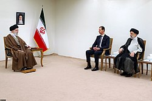
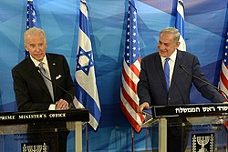
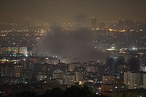
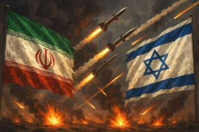

Iran–Israel Conflict
A decades-long geopolitical struggle characterized by covert operations, cyber warfare, and proxy militia conflicts across the Middle East.
Strategic Background & Tactics
Following the 1979 Iranian Revolution, hostility toward Israel became a core pillar of Iran's foreign policy. Because the two nations do not share a direct border, they have historically engaged in a "shadow war" utilizing indirect military strategies rather than conventional warfare.
- Israeli Strategy: Focuses on preventing Iran from developing nuclear weapons and halting the transfer of advanced munitions to hostile militias. Tactics include covert assassinations of Iranian nuclear scientists, sophisticated cyberattacks (such as the Stuxnet worm), and regular airstrikes against Iranian assets in Syria.
- Iranian Strategy: Aims to surround Israel with heavily armed non-state actors (proxies) to deter Israeli attacks on Iranian soil. Iran provides advanced weaponry, funding, and training to these groups via the Islamic Revolutionary Guard Corps (IRGC).
The "Axis of Resistance"
Iran exerts its regional influence through a network of allied militant groups, collectively referred to by Tehran as the "Axis of Resistance." Key operational fronts include:
- Lebanon (Hezbollah): The most powerful Iranian proxy, possessing a massive arsenal of precision-guided missiles aimed directly at northern Israel.
- Gaza Strip (Hamas & PIJ): Palestinian militant groups that receive significant financial and military backing from Iran to combat Israel directly.
- Yemen (Houthis): A rebel group utilized to disrupt Red Sea shipping and launch long-range ballistic missiles toward southern Israel.
- Syria & Iraq: Various Shia militias serving as a land bridge and logistical supply line for Iranian weapons transfers.
Intelligence & Image Gallery




Recent Escalations (2023–Present)
The conflict dramatically escalated following the October 7, 2023 attacks by Hamas and the subsequent Israeli invasion of Gaza. This triggered a region-wide mobilization of Iranian proxies.
The End of the "Shadow War": In April 2024, following an Israeli airstrike on an Iranian diplomatic compound in Syria, Iran launched an unprecedented direct drone and missile attack from its own soil against Israel. This event marked a historic shift, moving the conflict out of the shadows and raising international fears of an all-out conventional regional war.